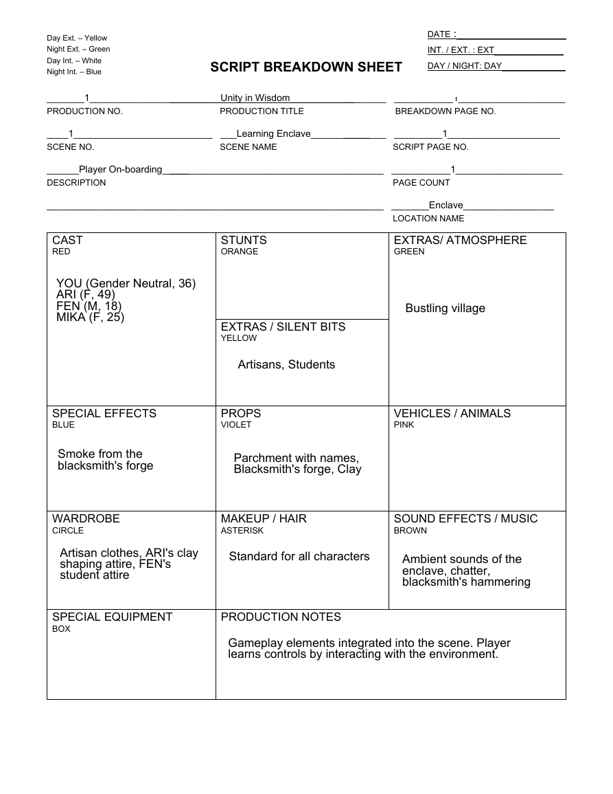
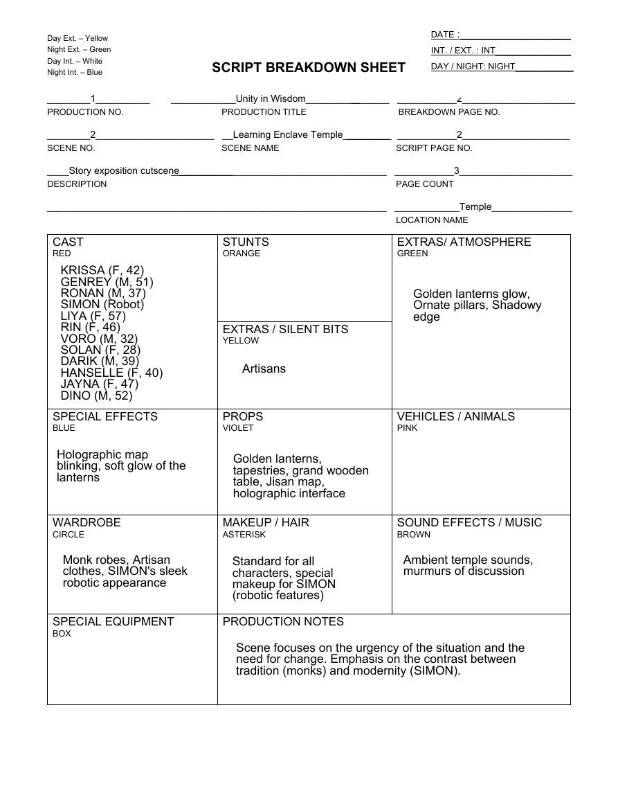
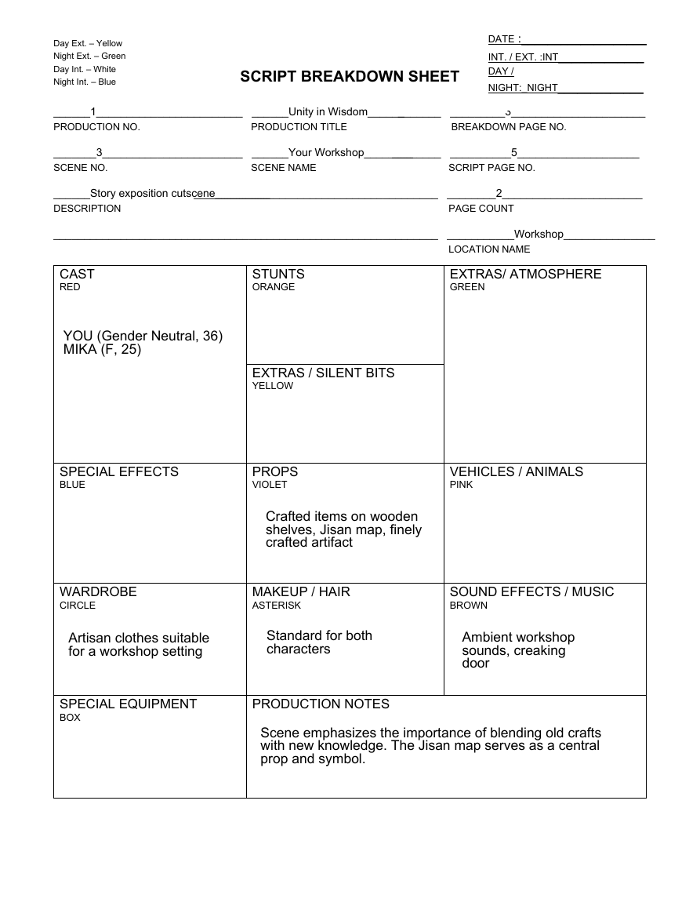
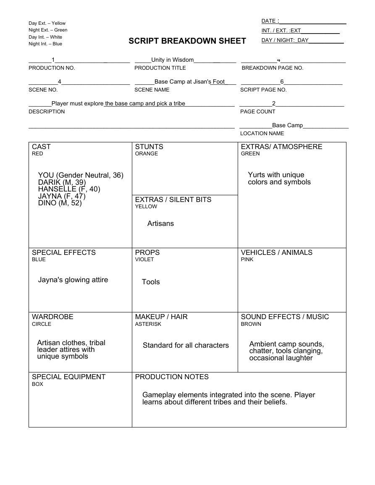
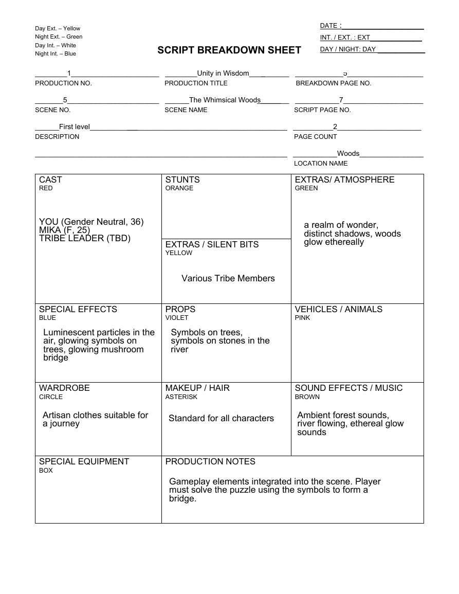
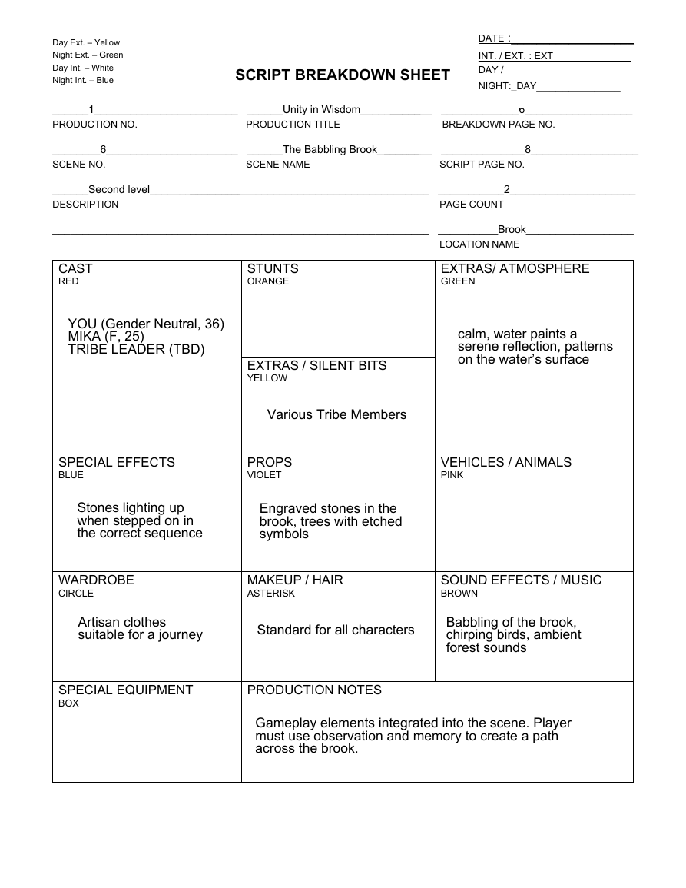
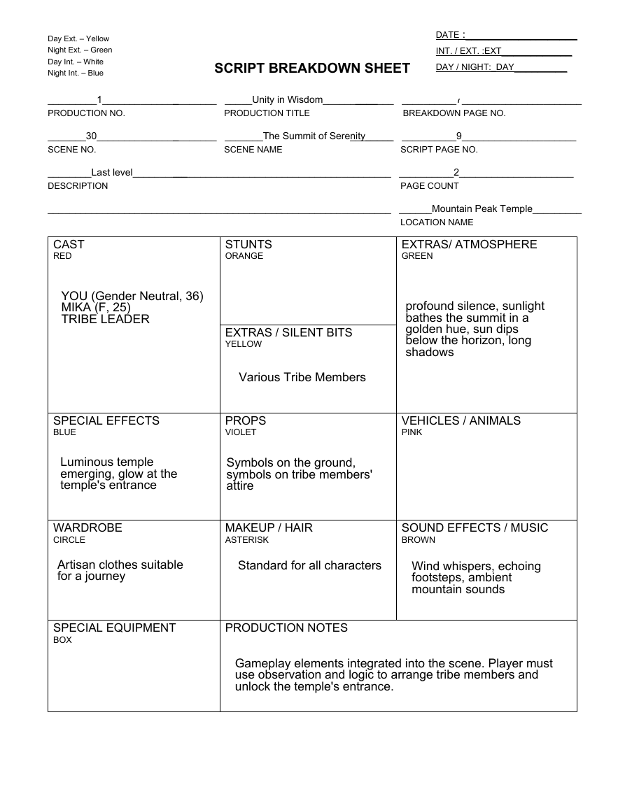
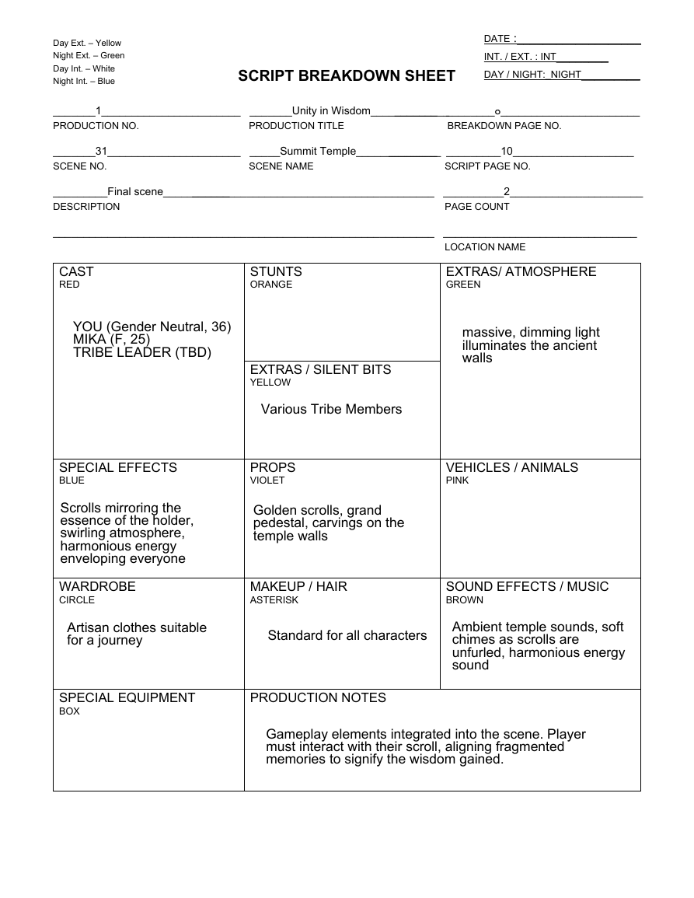

108.4 - Unity in Wisdom - Scene Breakdown Sheet.pdf
Page 1 of 8

Read extracted text for page 1 of 8
SCRIPT BREAKDOWN SHEET _______1_______________________ Unity in Wisdom___________________ ___________1____________________ PRODUCTION NO. PRODUCTION TITLE BREAKDOWN PAGE NO. ____1__________________________ ___Learning Enclave___________________ _________1_____________________ SCENE NO. SCENE NAME SCRIPT PAGE NO. ______Player O n-boarding_____________________________________________ ___________1____________________ DESCRIPTION PAGE COUNT _______________________________________________________________ _______Enclave_________________ LOCATION NAME CAST RED STUNTS ORANGE EXTRAS/ ATMOSPHERE GREEN EXTRAS / SILENT BITS YELLOW SPECIAL EFFECTS BLUE PROPS VIOLET VEHICLES / ANIMALS PINK WARDROBE CIRCLE MAKEUP / HAIR ASTERISK SOUND EFFECTS / MUSIC BROWN SPECIAL EQUIPMENT BOX PRODUCTION NOTES Day Ext. – Yellow Night Ext. – Green Day Int. – White Night Int. – Blue DATE :___________________ INT. / EXT. : EXT____________ DAY / NIGHT: D AY___________ YO U (G ender N eutral, 3 6) AR I (F, 49) FEN (M , 1 8 ) M IKA (F, 25) Artisans, Students Sm oke from the blacksm ith's forge B ustling village Parchm ent w ith nam es, B lacksm ith's forge, C lay Artisan clothes, AR I's clay shaping attire, FEN 's student attire Standard for all characters Am bient sounds of the enclave, chatter, blacksm ith's ham m ering G am eplay elem ents integrated into the scene. Player learns controls by interacting w ith the environm ent.
Page 2 of 8

Read extracted text for page 2 of 8
SCRIPT BREAKDOWN SHEET ________1__________ ____________Unity in Wisdom_________________ ___________2_____________________ PRODUCTION NO. PRODUCTION TITLE BREAKDOWN PAGE NO. ________2______________________ __Learning Enclave Temple_________________ ___________2____________________ SCENE NO. SCENE NAME SCRIPT PAGE NO. ____Story exposition cutscene__________________________________________________ ___________3_____________________ DESCRIPTION PAGE COUNT _______________________________________________________________ ____________Tem ple_______________ LOCATION NAME CAST RED STUNTS ORANGE EXTRAS/ ATMOSPHERE GREEN EXTRAS / SILENT BITS YELLOW SPECIAL EFFECTS BLUE PROPS VIOLET VEHICLES / ANIMALS PINK WARDROBE CIRCLE MAKEUP / HAIR ASTERISK SOUND EFFECTS / MUSIC BROWN SPECIAL EQUIPMENT BOX PRODUCTION NOTES Day Ext. – Yellow Night Ext. – Green Day Int. – White Night Int. – Blue DATE :___________________ INT. / EXT. : IN T_____________ DAY / NIGHT: N IG H T__________ KR ISSA (F, 42) G EN R EY (M , 51 ) R O N AN (M , 3 7) SIM O N (R obot) LIYA (F, 57) R IN (F, 46) VO R O (M , 3 2) SO LAN (F, 28 ) D AR IK (M , 3 9) H AN SELLE (F, 40) JAYN A (F, 47) D IN O (M , 52) Artisans G olden lanterns glow , O rnate pillars, Shadow y edge H olographic m ap blinking, soft glow of the lanterns G olden lanterns, tapestries, grand w ooden table, Jisan m ap, holographic interface M onk robes, Artisan clothes, SIM O N 's sleek robotic appearance Standard for all characters, special m akeup for SIM O N (robotic features) Am bient tem ple sounds, m urm urs of discussion Scene focuses on the urgency of the situation and the need for change. Em phasis on the contrast betw een tradition (m onks) and m odernity (SIM O N ).
Page 3 of 8

Read extracted text for page 3 of 8
SCRIPT BREAKDOWN SHEET ______1________________________ ______Unity in Wisdom_____________ _________3______________________ PRODUCTION NO. PRODUCTION TITLE BREAKDOWN PAGE NO. _______3_______________________ ______Your Workshop________________ __________5____________________ SCENE NO. SCENE NAME SCRIPT PAGE NO. ______Story exposition cutscene_________________________________________________ ________2_______________________ DESCRIPTION PAGE COUNT _______________________________________________________________ ___________Workshop_______________ LOCATION NAME CAST RED STUNTS ORANGE EXTRAS/ ATMOSPHERE GREEN EXTRAS / SILENT BITS YELLOW SPECIAL EFFECTS BLUE PROPS VIOLET VEHICLES / ANIMALS PINK WARDROBE CIRCLE MAKEUP / HAIR ASTERISK SOUND EFFECTS / MUSIC BROWN SPECIAL EQUIPMENT BOX PRODUCTION NOTES Day Ext. – Yellow Night Ext. – Green Day Int. – White Night Int. – Blue DATE :___________________ INT. / EXT. :IN T_____________ DAY / NIGHT:_NIG H T_____________ YO U (G ender N eutral, 3 6) M IKA (F, 25) C rafted item s on w ooden shelves, Jisan m ap, finely crafted artifact Artisan clothes suitable for a w orkshop setting Standard for both characters Am bient w orkshop sounds, creaking door Scene em phasizes the im portance of blending old crafts w ith new know ledge. The Jisan m ap serves as a central prop and sym bol.
Page 4 of 8

Read extracted text for page 4 of 8
SCRIPT BREAKDOWN SHEET _______1________________________ _____Unity in Wisdom_______________ ___________4____________________ PRODUCTION NO. PRODUCTION TITLE BREAKDOWN PAGE NO. _________4_____________________ ______Base Camp at Jisan's Foot_________ ____________6__________________ SCENE NO. SCENE NAME SCRIPT PAGE NO. _______Player m ust explore the base cam p and pick a tribe________________________________________ __________2_____________________ DESCRIPTION PAGE COUNT _______________________________________________________________ __________Base C am p______________ LOCATION NAME CAST RED STUNTS ORANGE EXTRAS/ ATMOSPHERE GREEN EXTRAS / SILENT BITS YELLOW SPECIAL EFFECTS BLUE PROPS VIOLET VEHICLES / ANIMALS PINK WARDROBE CIRCLE MAKEUP / HAIR ASTERISK SOUND EFFECTS / MUSIC BROWN SPECIAL EQUIPMENT BOX PRODUCTION NOTES Day Ext. – Yellow Night Ext. – Green Day Int. – White Night Int. – Blue DATE :___________________ INT. / EXT. :EXT___________ DAY / NIGHT:_DAY__________ YO U (G ender N eutral, 3 6) D AR IK (M , 3 9) H AN SELLE (F, 40) JAYN A (F, 47) D IN O (M , 52) Artisans Yurts w ith unique colors and sym bols Tools Artisan clothes, tribal leader attires w ith unique sym bols Standard for all characters Am bient cam p sounds, chatter, tools clanging, occasional laughter Jayna's glow ing attire G am eplay elem ents integrated into the scene. Player learns about different tribes and their beliefs.
Page 5 of 8

Read extracted text for page 5 of 8
SCRIPT BREAKDOWN SHEET ________1______________________ ________Unity in Wisdom___________ ____________5___________________ PRODUCTION NO. PRODUCTION TITLE BREAKDOWN PAGE NO. _______5_______________________ ______The Whimsical Woods_____________ ___________7____________________ SCENE NO. SCENE NAME SCRIPT PAGE NO. ______First level____________________________________________________ __________2_____________________ DESCRIPTION PAGE COUNT _______________________________________________________________ ___________Woods________________ LOCATION NAME CAST RED STUNTS ORANGE EXTRAS/ ATMOSPHERE GREEN EXTRAS / SILENT BITS YELLOW SPECIAL EFFECTS BLUE PROPS VIOLET VEHICLES / ANIMALS PINK WARDROBE CIRCLE MAKEUP / HAIR ASTERISK SOUND EFFECTS / MUSIC BROWN SPECIAL EQUIPMENT BOX PRODUCTION NOTES Day Ext. – Yellow Night Ext. – Green Day Int. – White Night Int. – Blue DATE :___________________ INT. / EXT. : EXT____________ DAY / NIGHT: D AY ___________ YO U (G ender N eutral, 3 6) M IKA (F, 25) TR IB E LEAD ER (TB D ) Lum inescent particles in the air, glow ing sym bols on trees, glow ing m ushroom bridge Sym bols on trees, sym bols on stones in the river Artisan clothes suitable for a journey Standard for all characters Am bient forest sounds, river flow ing, ethereal glow sounds G am eplay elem ents integrated into the scene. Player m ust solve the puzzle using the sym bols to form a bridge. a realm of w onder, distinct shadow s, w oods glow ethereally Various Tribe M em bers
Page 6 of 8

Read extracted text for page 6 of 8
SCRIPT BREAKDOWN SHEET ______1________________________ ______Unity in Wisdom_________________ _____________6__________________ PRODUCTION NO. PRODUCTION TITLE BREAKDOWN PAGE NO. ________6______________________ ______The Babbling Brook_______________ ______________8__________________ SCENE NO. SCENE NAME SCRIPT PAGE NO. ______Second level_______________________________________________________ ___________2_____________________ DESCRIPTION PAGE COUNT _______________________________________________________________ __________Brook__________________ LOCATION NAME CAST RED STUNTS ORANGE EXTRAS/ ATMOSPHERE GREEN EXTRAS / SILENT BITS YELLOW SPECIAL EFFECTS BLUE PROPS VIOLET VEHICLES / ANIMALS PINK WARDROBE CIRCLE MAKEUP / HAIR ASTERISK SOUND EFFECTS / MUSIC BROWN SPECIAL EQUIPMENT BOX PRODUCTION NOTES Day Ext. – Yellow Night Ext. – Green Day Int. – White Night Int. – Blue DATE :___________________ INT. / EXT. : EXT____________ DAY / NIGHT:_DAY_____________ Stones lighting up w hen stepped on in the correct sequence YO U (G ender N eutral, 3 6) M IKA (F, 25) TR IB E LEAD ER (TB D ) Artisan clothes suitable for a journey Standard for all characters B abbling of the brook, chirping birds, am bient forest sounds Engraved stones in the brook, trees w ith etched sym bols calm , w ater paints a serene reflection, patterns on the w ater’s surface G am eplay elem ents integrated into the scene. Player m ust use observation and m em ory to create a path across the brook. Various Tribe M em bers
Page 7 of 8

Read extracted text for page 7 of 8
SCRIPT BREAKDOWN SHEET _________1______________________ _____Unity in W isdom _________________ __________7______________________ PRODUCTION NO. PRODUCTION TITLE BREAKDOWN PAGE NO. _______30_______________________ _______The Summit of Serenity_____________ __________9_____________________ SCENE NO. SCENE NAME SCRIPT PAGE NO. ________Last level__________________________________________________ __________2_____________________ DESCRIPTION PAGE COUNT _______________________________________________________________ ______Mountain Peak Tem ple_________ LOCATION NAME CAST RED STUNTS ORANGE EXTRAS/ ATMOSPHERE GREEN EXTRAS / SILENT BITS YELLOW SPECIAL EFFECTS BLUE PROPS VIOLET VEHICLES / ANIMALS PINK WARDROBE CIRCLE MAKEUP / HAIR ASTERISK SOUND EFFECTS / MUSIC BROWN SPECIAL EQUIPMENT BOX PRODUCTION NOTES Day Ext. – Yellow Night Ext. – Green Day Int. – White Night Int. – Blue DATE :___________________ INT. / EXT. :EXT____________ DAY / NIGHT:_DAY_________ YO U (G ender N eutral, 3 6) M IKA (F, 25) TR IB E LEAD ER Various Tribe M em bers profound silence, sunlight bathes the sum m it in a golden hue, sun dips below the horizon, long shadow s Lum inous tem ple em erging, glow at the tem ple's entrance Sym bols on the ground, sym bols on tribe m em bers' attire Artisan clothes suitable for a journey Standard for all characters W ind w hispers, echoing footsteps, am bient m ountain sounds G am eplay elem ents integrated into the scene. Player m ust use observation and logic to arrange tribe m em bers and unlock the tem ple's entrance.
Page 8 of 8

Read extracted text for page 8 of 8
SCRIPT BREAKDOWN SHEET _______1_______________________ _______Unity in W isdom ____________________ ________8_______________________ PRODUCTION NO. PRODUCTION TITLE BREAKDOWN PAGE NO. _______31 ______________________ _____Sum m it Tem ple______________________ _________10____________________ SCENE NO. SCENE NAME SCRIPT PAGE NO. _________Final scene___________________________________________________ __________2______________________ DESCRIPTION PAGE COUNT _______________________________________________________________ ________________________________ LOCATION NAME CAST RED STUNTS ORANGE EXTRAS/ ATMOSPHERE GREEN EXTRAS / SILENT BITS YELLOW SPECIAL EFFECTS BLUE PROPS VIOLET VEHICLES / ANIMALS PINK WARDROBE CIRCLE MAKEUP / HAIR ASTERISK SOUND EFFECTS / MUSIC BROWN SPECIAL EQUIPMENT BOX PRODUCTION NOTES Day Ext. – Yellow Night Ext. – Green Day Int. – White Night Int. – Blue DATE :___________________ INT. / EXT. : IN T________ DAY / NIGHT:_NIG H T_________ YO U (G ender N eutral, 3 6) M IKA (F, 25) TR IB E LEAD ER (TB D ) Scrolls m irroring the essence of the holder, sw irling atm osphere, harm onious energy enveloping everyone G olden scrolls, grand pedestal, carvings on the tem ple w alls Various Tribe M em bers Standard for all charactersArtisan clothes suitable for a journey G am eplay elem ents integrated into the scene. Player m ust interact w ith their scroll, aligning fragm ented m em ories to signify the w isdom gained. Am bient tem ple sounds, soft chim es as scrolls are unfurled, harm onious energy sound m assive, dim m ing light illum inates the ancient w alls